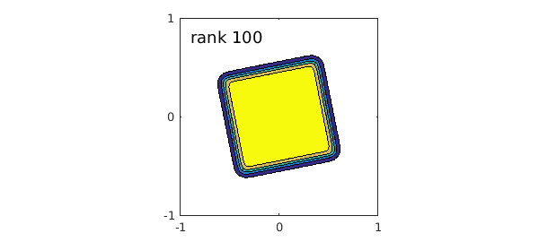
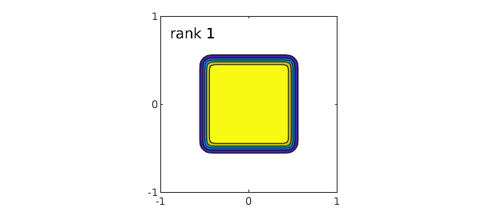
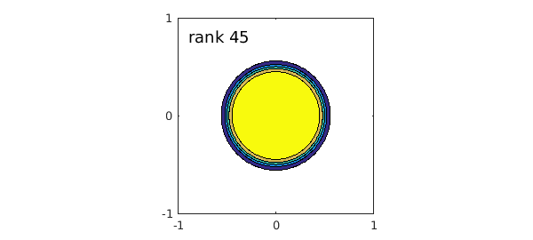

1. Three example functions
A recent example called "Low-rank approximation and alignment with axes" explored the phenomenon that the alignment of a function $f(x,y)$ with the $x$ and $y$ axes may greatly affect the rank of its representation in Chebfun2. Here we look at three more examples from cheb.gallery2.
Here's the "tilted peg" example.
[f,fa] = cheb.gallery2('tiltedpeg'); fa
fa =
@(x,y)1./((1+(2*x+.4*y).^20).*(1+(2*y-.4*x).^20))
A plot shows this this is a somewhat smoothed version of the characteristic function of a tilted square:
levels = .1:.2:.9; contourf(f,levels), axis equal set(gca,'xtick',-1:1,'ytick',-1:1) FS = 'fontsize'; text(-.9,.8,['rank ' int2str(rank(f))],FS,18)

If the peg is aligned with the axes it is a separable function, hence of rank 1:
[f,fa] = cheb.gallery2('squarepeg'); fa
contourf(f,levels), axis equal
set(gca,'xtick',-1:1,'ytick',-1:1)
text(-.9,.8,['rank ' int2str(rank(f))],FS,18)
fa =
@(x,y)1./((1+(2*x).^20).*(1+(2*y).^20))

A round peg has an in-between rank:
[f,fa] = cheb.gallery2('roundpeg'); fa
contourf(f,levels), axis equal
set(gca,'xtick',-1:1,'ytick',-1:1)
text(-.9,.8,['rank ' int2str(rank(f))],FS,18)
fa =
@(x,y)1./(1+((2*x).^2+(2*y).^2).^10)

2. Discussion
The functions shown here were motivated by the rational filter function $b(z) = 1/(1+z^n)$ for a single complex variable discussed in [1] and illustrated in Figure 1.2 of that paper. The label $b$ marks the link of this function to the Butterworth filter of electrical engineering.
Analogous examples to those shown here are in the Diskfun gallery collection, to be released before long. There, the round peg has rank 1 whereas the square peg does not. Tilting does not matter. Translation does matter, however: if a round peg is moved away from the origin, its rank goes up.
For a general discussion of issues of grid alignment and rank-compression, see [4], where references can be found to more technical works in this area by many authors.
When one considers examples like those shown here it is natural to wonder, couldn't Chebfun2 take advantage of these effects to represent functions more efficiently? The tilted peg, in particular, cries out for some kind of tilted representation. Our current view of this matter is that it is hard to achieve such an effect for general-purpose computation with functions as in Chebfun2. In higher dimensions, on the other hand, the potential gains becomes more crucial, and there is certainly interest in many corners of science, engineering, and data science in representations that exploit special structure of functions in a more targeted way. For two very different examples with this flavour, see [2] and [3].
3. References
-
A. P. Austin, P. Kravanja, and L. N. Trefethen, Numerical algorithms based on analytic function values at roots of unity, SIAM J. Numer. Anal. 52 (2014), 1795-1821.
-
P. G. Constantine, Active Subspaces: Emerging Ideas for Dimension Reduction in Parameter Studies, SIAM, 2015.
-
F. J. Herrmann, reference to be determined.
-
L. N. Trefethen, Cubature, approximation, and isotropy in the hypercube, SIAM Review, submitted.